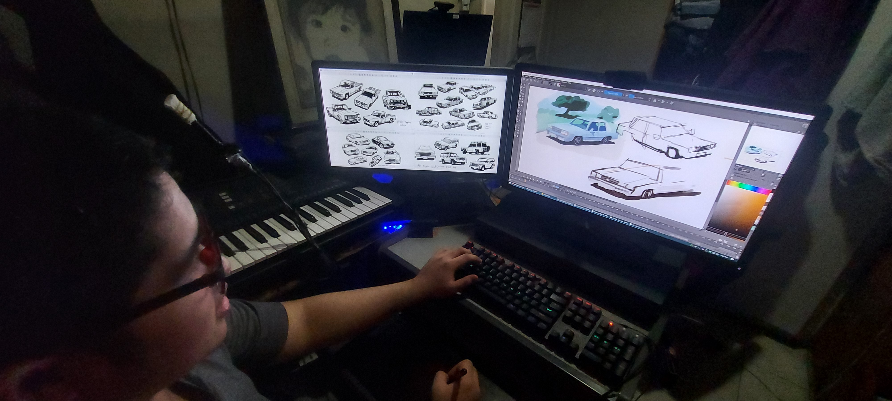

About Me
I'm Percival P. Lopez IV. A young artist with programming skills. Aspires to be a game developer to develop games that focuses on puzzle solving and provides educational knowledge that is applicable to the real world. Has years of experience in digital drawing and animation, music production, and programming.
Work Philosophy
Believes that thorough planning and strategizing needs to come first before action for it to succeed. Organization oriented person and aims to utilize available resources to be used at its best without seeking costly products or applications. Planning can help identify big and small tasks that needs to be done, if the task is too big then it should be divided into smaller tasks that cant tackle in a short period of time. Every small step makes a huge difference no matter the speed.